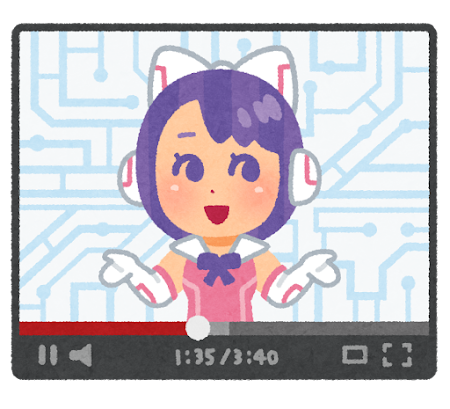
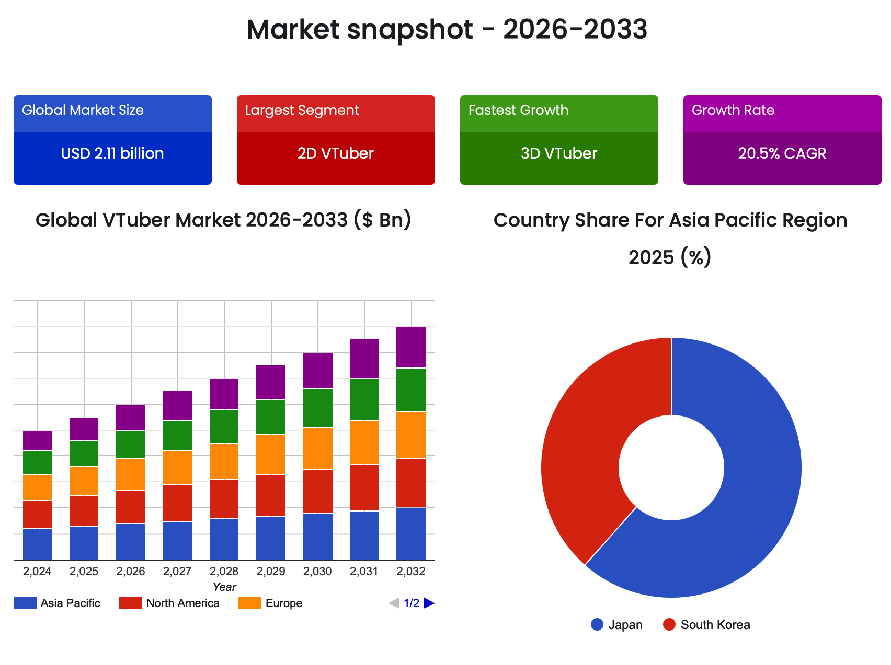
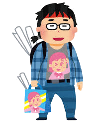
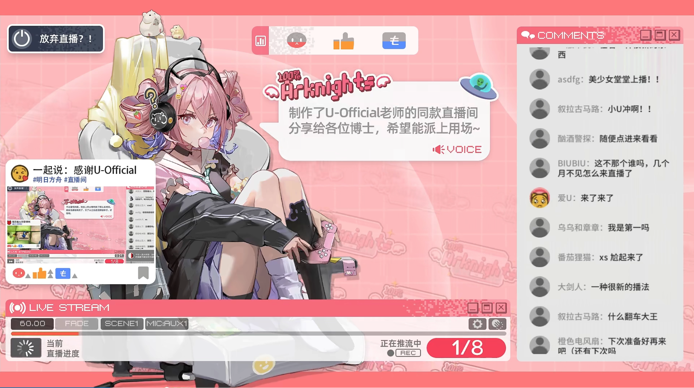
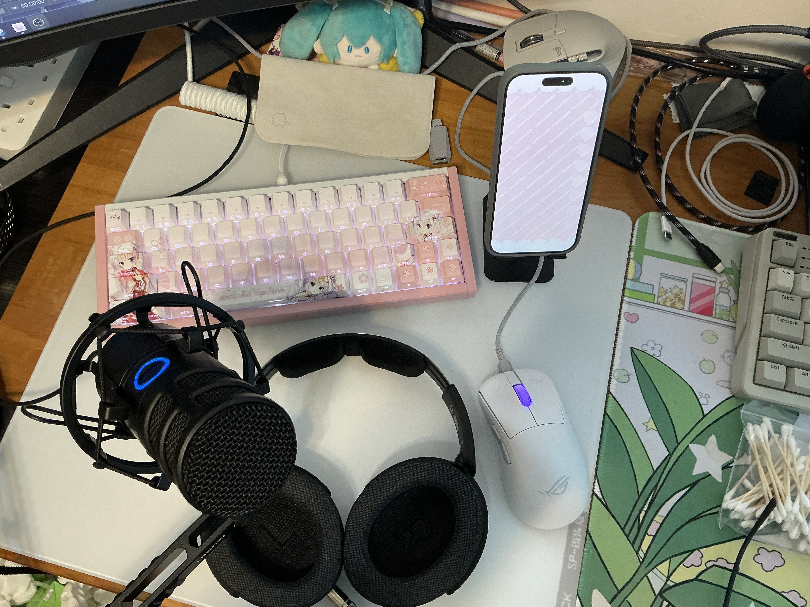

The global VTuber market is forecast to reach USD 13.62 billion by 2033, built on the parasocial bonds between distant idols and millions of fans. But the most intense version of that bond may happen far below the radar of any market forecast — in single rented rooms, between streamers and audiences small enough to know each other by name.
It is 7:30 on a Tuesday evening when the pink-and-white cat girl appears on screen. She wears a pink night dress, has fluffy ears that tilt when she listens, and answers to the name Marshmallow Ame. Within seconds of her stream starting, twenty-five to thirty-five familiar usernames are typing greetings. Drink water tonight. Don't stream too late. She knows them by handle. She greets them back.
The 27-year-old person behind Marshmallow Ame is in her mid-twenties. She designed the avatar herself, then asked a friend who paints to refine the sketches. The character is meant, she said in Mandarin, to feel like being wrapped in a warm blanket — soft voice, sweet tooth, head tilted toward whoever is speaking. The bravery, though, is borrowed from elsewhere.
She started streaming in late 2023, in a single rented room in a city where she had moved for a corporate job after university. Her parents wanted her to sit civil-service exams. She wanted, she said, to find people who liked the things she liked, in a face that wouldn't be disliked. For the first months she doubted herself daily. "I just wanted to try. At least if I tried, I wouldn't regret it."
She streams three or four nights a week. The regulars — about thirty of them — show up almost exactly on time.
"Each time I open the stream, the familiar profile pictures light up one after another. Really like family."

The standard story about VTubers — the one that has reached English-language press — is about anonymity as distance. The animated avatar, the voice changing, the nakanohito (the "person inside") whose real face viewers will never see: these create the conditions for what media researchers call parasocial relationships, one-way bonds with figures who do not know their fans exist.
A 2025 study presented at CHI, the field's main academic conference, analyzed 13,655 Reddit posts about VTuber retirements and found that fans grieved with reactions strikingly similar to bereavement — shock, numbness, and loyalty that persisted long after the streamer had gone.
But that research was built on the biggest names — performers whose final streams drew over half a million concurrent viewers. At Marshmallow Ame's scale, the equation inverts.
Her thirty regulars know her stream times. They know which games make her laugh. The avatar is not creating distance. It is creating, paradoxically, the permission to come close.

The expected increase of VTuber market size from 2025 to 2032, based on data from 2023. Source: SkyQuest.
One of Marshmallow Ame's regulars, Mr He, 22 years old, described himself as a DD — a fan who watches "anyone and everyone." But he was specific about why he ends up sitting in small streams.
Asked why he stays in any particular streamer's room, he was less able to explain. "Maybe I just like the personality," he said. "I'm a bit of a dead-inside type. Watching this kind of person feels more comfortable."
He keeps contact through Bilibili private messages and one QQ fan group, and only there. He has a rule he calls his "experience."
"My experience is: don't get too close. When she leaves, it won't hurt as much."

It is a sentence that contains the whole shape of the room: a fan who knows, before the avatar has even sung its first farewell, that one day the avatar will stop. He stays anyway. He gifts anyway. He just keeps the screen between himself and the loss.
I have watched VTubers for nearly a decade, and once tried streaming as one myself. The thing nobody tells you is how the smallness of the audience reshapes everything. A room of thirty does not behave like a room of three thousand.
The Chinese VTuber industry is, however, increasingly run by people who think in thousands. In Tokyo, Cover Corp, the parent company of Hololive (the world's largest VTuber agency), posted record income of ¥43.4 billion in the 2025 financial year — a 44 per cent increase. Its concerts alone drew more than 520,000 visitors. Its closest rival, Anycolor, parent of Nijisanji, came in just behind at ¥42.9 billion.
According to 2023 data from the industry-research organisation SkyQuest, the global VTuber market is expected to grow sharply, from USD 3.06 billion in 2025 to USD 13.62 billion in 2033, with a compound rate of 20.5 per cent a year. The Asia-Pacific region — mainly East Asia (China, Japan, South Korea) and Southeast Asia (Indonesia, Malaysia, Singapore) — accounts for about two-thirds of the revenue.
One of them is Chobits live, a small multi-language VTuber agency co-founded in the waves of the 2020–2021 Bilibili VTuber boom in China. A staff member, who asked not to be named, said the company currently has six active talents.
"We're a typical small-and-fine style. We don't chase numbers. We chase each person's long-term, healthy development."
He watched, he said, too many independent streamers in the boom years burn out at fifty to a hundred viewers because "they didn't know how to negotiate sponsorships, didn't know how to handle fan conflicts, and when something broke on the stream, nobody could fix it." His company exists, in his telling, as a safety net.

A Stream Room Layout style for VTubers. Arknights. Hypergryph. Bilibili. 白鸟Asuta_Channel.
Another independent streamer, when asked what had surprised him most about the work, gave a simpler answer.
"Honestly, the broadcast length. When I was just watching, I didn't think it took this much time. Now I'm streaming three or four hours — it can feel long."
Asked whether what he does and what the agency-signed stars do are the same job, he was direct. "Of course not. The bottom and the top both look like Live2D streams, but they have almost nothing in common."
When the biggest VTubers retire, they do it in front of half a million people. When the small ones stop, almost no one notices.
A former independent streamer, who ended her run at the close of 2024, described it in two sentences. "It was always a struggle. I had a full-time job, and the part-time streaming had started affecting my main work without producing results." Her boss had warned her at the office. That evening, she went on stream and felt, she said, like she was forcing a smile.
She held a graduation broadcast — the standard farewell ritual in Chinese-language VTuber circles. She did not upload the recording.
The phrase, untranslatable cleanly, refers to the platform's habit of pushing a retiring streamer's farewell video a huge traffic boost — memorialising them in a way that can pull them back.
She kept the avatar. "It's still with me. If I run short on money one day, I might sell it." Asked whether she still thinks about the character, she paused.
"Sometimes. It is a form I put my own effort into."
She does not compare any of this to the industry-level events that English-language press covers.
"My stopping was normal. I just couldn't keep going. I love my fans, but I couldn't give them enough emotional value."

The usual desktop when streaming — headphones, condenser microphone, and the iPhone required for face-capture via Apple FaceID. Photo: Zhang Jinghao.
Tomorrow night, at 7:30, Marshmallow Ame will appear again. Twenty-five regulars will type drink water and don't stream too late. She will tilt her head when they speak. None of it will move a market forecast. None of it will be measured.
The room is small enough that the distinction has stopped mattering.